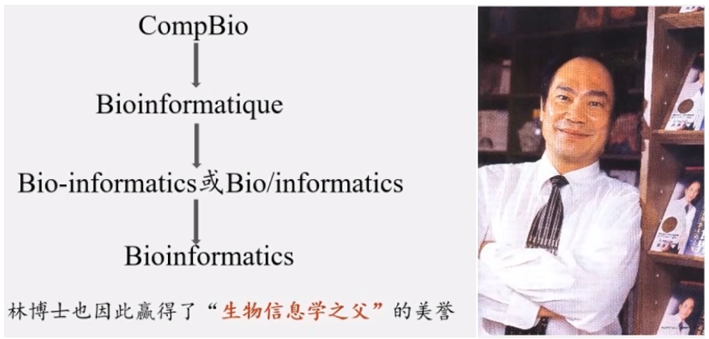
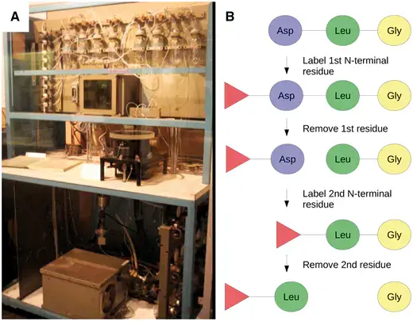
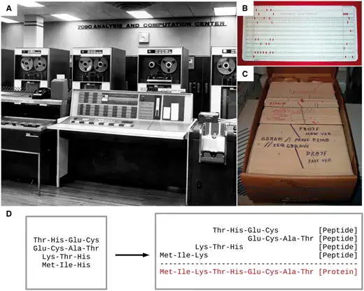
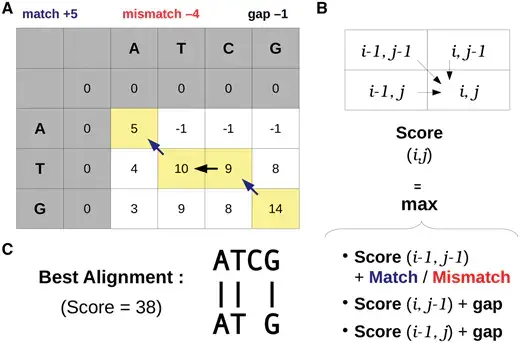
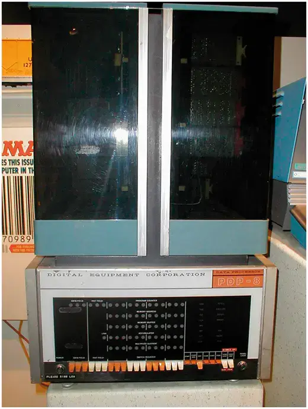
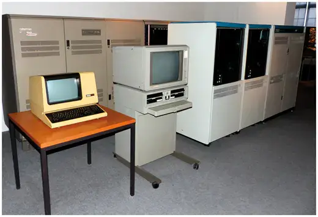
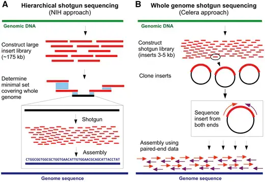
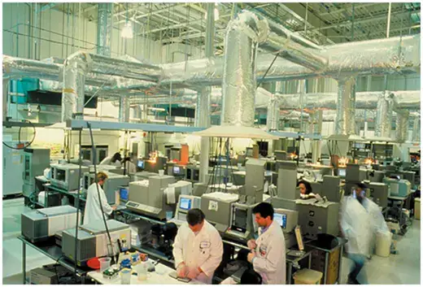
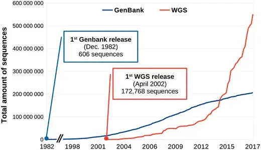

绪论¶
起源：1950-1970¶
20世纪50年代早期，DNA的历史地位还没有被建立，那个时候人们普遍认为蛋白质才是遗传信息的载体。直到1952年的噬菌体感染实验，人们才第一次证明DNA是真正的遗传物质。因为这个历史原因，生物信息学在DNA中的应用要落后于蛋白质研究将近20年时间。

生物信息从蛋白质研究开始¶
50年代后期，人们得到了胰岛素的蛋白质序列，这一成就激励人们去开发获得蛋白质序列更有效的方法。Edman降解法就是其中之一，肽链的第一个N-末端氨基酸用异硫氰酸苯酯（PITC）标记，然后通过降低pH来进行切割。通过重复该过程，一次一个N-末端氨基酸进而可以确定肽序列。

第一位生物信息学家¶
Margaret Dayhoff（1925-1983）是一位美国物理化学家，他开创了计算方法在生物化学领域的应用。Dayhoff 对这一领域的贡献非常重要，NCBI前主任 David J. Lipman 称她为”生物信息学的母亲和父亲” 。1960年，她成为国家生物医学资源基金会的副主任。与Robert S. Ledley 一起开发出了第一个生物信息学软件：COMPORTEIN, 用于使用Edman测序数据确定蛋白质的一级结构，使用fortran 语言开发并运行在打孔卡上，完全运行在这个软件运行在IBM 7090 大型机上，如下图A所示

在 COMPROTEIN 软件中，输入和输出氨基酸序列以三个字母的缩写表示（例如赖氨酸的Lys，丝氨酸的Ser）。为了简化蛋白质序列数据的处理，Dayhoff 后来开发了目前仍在使用的单字母氨基酸代码。这个单字母代码最初用于Dayhoff和Eck的1965年蛋白质序列和结构图谱，而它是有史以来第一个生物序列数据库。第一版包含65种蛋白质序列，其中大部分是少数蛋白质的种间变异。
计算机算法的出现¶
1970年，Needleman和Wunsch 开发了第一个成对蛋白质序列比对的动态编程算法，80年代早期，做为Needleman-Wunsch算法的推广，第一个多序列比对（MSA）算法首次公布，但是这个算法并没有太大的价值，因为其时间复杂度是，L代表序列长度，N代表序列数量。找到最佳比对的时间与序列长度的序列数量次幂成正比。

多序列比对第一个真正成熟的算法由Da-Fei Feng和Russell F. Doolitle于1987年开发，流行的MSA软件 CLUSTAL 开发于1988年，作为Feng-Doolittle算法的简化至今仍在使用和维护。
蛋白质到DNA: 1970-1980
1968年，64个密码子都被解析出来，DNA 成为可读信息后要求我们能都快速获得DNA序列。
读取DNA序列¶
第一种被广泛采用的DNA测序方法是1976年发表的 Maxam-Gilbert 测序方法。由于该方法使用了放射性和危险化学品， 同时其固有的复杂性在很大程度上阻碍了其用于支持 Frederick Sanger 实验室开发的方法。Sanger 团队在1977年开发出名为“plus and minus” 的DNA测序方法，这是第一个要依赖DNA聚合酶进行而成的方法，对该方法进行改进后诞生了目前常见的Sanger 双脱氧链终止法 ，即使在成立40年后的今天它仍在广泛使用中。
第一个专门用于分析 Sanger 测序读数的软件由Roger Staden于1979年发表。该程序集可分别用于
- 搜索Sanger凝胶读数之间的重叠;
- 验证，编辑和连接序列读数到重叠群;
- 注释和操作序列文件。
Staden Package 是第一个包含附加字符（Staden称为“不确定代码”）的序列分析软件，以用于记录序列读取中的非确定性碱基。这种扩展的DNA字母表是现代IUBMB（国际生物化学和分子生物学联合会）命名法的前身之一，用于核酸序列中未完全指定的碱基。
DNA序列应用于系统发育推断¶
Felsenstein 是第一个利用最大似然（ML）方法从DNA序列推断系统发育树的软件。在 Felsenstein之后已经开发出了若干种使用ML的生物信息学工具以及用于评估节点稳健性的新统计方法。从某种程度上，在20世纪90年代人们因此受到启发，将贝叶斯统计应用在分子系统发育中并使用至今。
在20世纪70年代后半期，人们又必须克服一些技术限制以扩大计算机在DNA分析中的应用（更不用说DNA分析本身）。接下来的十年是解决这些问题的关键。
生物学和计算机并行发展：1980-1990¶
靶向和扩增特定基因¶
与蛋白质和RNA不同，基因不能进行生物化学分级然后单独测序，因为它们都是连续地在每个细胞的少量DNA分子上连续存在。基因通常以每个细胞一个或几个拷贝存在，基因的数量级比它们编码的产品的数量级少很多，可以说DNA是可以测序的最不丰富的大分子细胞成分。
1972年当 Jackson，Symons和Berg 使用限制性核酸内切酶和DNA连接酶切割并将环状SV40病毒DNA插入λDNA并用该载体转化大肠杆菌细胞时，该问题得到了部分解决。插入的DNA分子在宿主生物中复制时也随着大肠杆菌培养物的生长而扩增，产生出数百万拷贝的单个DNA插入物。该实验开创了独立于来源生物的基因的分离和扩增技术。然而，因为Berg非常担心这其中存在的伦理问题，因为他曾要求暂停使用DNA重组技术，并在1975年组织建立了一系列用于现代遗传学实践的指南。
操纵DNA的第二个里程碑是聚合酶链式反应（PCR）的出现，它允许在没有克隆程序的情况下扩增DNA。尽管使用DNA聚合酶进行"修复合成"的描述是在1971年由Kjell Kleppe 等人首次提出的。但PCR的发明却要归功于Kary Mullis，因为他对该方法进行了大量优化，特别是使用热稳定Taq聚合酶，以及开发热循环仪。
基因克隆和PCR现在常用于DNA文库制备，这对于获得序列数据至关重要。20世纪70年代后期DNA测序的出现，以及增强的DNA操作技术，已经产生了越来越多的可用序列数据。与此同时，20世纪80年代，人们开始越来越多地使用计算机和相关生物信息学软件。
使用计算机和专用软件¶
在20世纪70年代之前， 所谓的“小型计算机”仍然相当于一台小型家用冰箱的尺寸和重量（如下图所示），而且还不包括终端和存储单元。这样的体积限制使得个人或小型工作组的计算机购置变得异常繁琐。而且使用起来也异常的不友好。

第一波即用微型计算机于1977年进入消费市场。这一波浪潮出现的首批计算机包括三种型号：Commodore PET，Apple II和Tandy TRS-80，在比试，它们代表着体积小，价格低廉和用户友好。这三种计算机都具有一个内置的BASIC解释器，这 对于非程序员而言是一种简单的语言。
生物学计算机软件亦开始迅速发展。1984年，威斯康星大学遗传学计算机课题组（Genetics Computer Group）发表了与他们同名的“GCG”软件合集。GCG软件包是包括33个命令行工具的集合，可以用于操作DNA，RNA或蛋白质序列。要记住，这是为序列分析开发的第一个软件集合。

生物信息学和自由软件运动
1985年，Richard Stallman发表了GNU 宣言，概述了他创建名为GNU（基于Unix）免费操作系统的动机。这一运动后来成长为自由软件基金会（ Free Software Foundation ），该基金会倡导”用户可以自由运行，复制，分发，研究，改变和改进软件”的理念。Stallman倡导的自由软件哲学是生物信息学的若干倡议的核心，其它的倡议还包括如欧洲分子生物学开放软件套件，其发展始于1996年，作为自由和开放源码用来替代 GCG。
最重要的是，在此期间欧洲分子生物学实验室（EMBL），GenBank和日本DNA数据库（DDBJ）开始联合起来（1986年EMBL和GenBank加入，1987年DDBJ加入）。为了规范化数据格式定义了报告核苷酸序列的最简信息，并促进数据库之间数据共享。
20世纪80年代也是生物信息学在现代科学中存在感足以获得专门期刊的时刻。鉴于计算机可用性大幅提高以及在生物领域进行计算机辅助分析的巨大潜力，专门针对生物信息学的期刊_Computer Applications in the Biosciences(CABIOS)_ 于1985年成立，现在这个期刊已经更名为为_Bioinformatics_。
自由软件运动和专用科学期刊的出现拓宽了生物学中计算机的使用范围。然而，对于诸如全基因组和基因目录的大型数据集，使用小型大型计算机而不是微型计算机。这些系统通常在类Unix操作系统上运行，并且使用不同于微型计算机上常用的编程语言（例如C和FORTRAN）（例如BASIC和Pascal）。因此，为微型计算机制造的流行序列分析软件并不总是与大型计算机兼容，反之亦然。
台式计算机和新的编程语言¶
随着20世纪80年代早期x86和RISC微处理器的出现，出现了一类新的个人计算机。桌面工作站专为技术和科学应用而设计，具有与微型计算机相当的尺寸，但具有更高的硬件性能，以及更类似于大型计算机的软件架构。事实上，桌面工作站通常运行在Unix操作系统和衍生产品上，如HP-UX和BSD（图3）。
20世纪80年代中期出现了几种脚本语言，这些语言在今天的生物信息学家中仍然很受欢迎。这些语言抽象了计算系统的重要领域并利用了自然语言特征，从而简化了程序开发的过程。用脚本编写的程序通常不需要编译（即它们在启动时被解释），但执行速度比从C或Fortran代码[ 61 ] 编译的等效程序要慢。
Perl（实用提取和报告语言）是一种高级，多范式，解释性脚本语言，由Larry Wall于1987年创建，作为GNU操作系统的补充，以便于解析和报告文本数据[ 62 ]。其核心特征使其成为操纵生物序列数据的理想语言，其在文本格式中得到很好的体现。用Perl编写的最早出现的生物信息学软件可以追溯到1994年（表2）。直到21世纪后期，由于其极大的灵活性，Perl无疑是生物信息学的_通用语言_ [ 63]]。正如拉里·沃尔（Larry Wall）所说，“实现目标的方法不止一种”。BioPerl于1996年的发展（以及2002年的首次发布）促成了Perl在生物信息学领域的普及[ 64]。该Perl编程接口提供便于典型但非平凡任务的模块，例如（i）从本地和远程数据库访问序列数据，（ii）在不同文件格式之间切换，（iii）相似性搜索，以及（iv）注释序列数据。
但是，Perl的灵活性，加上其严格的语法，很容易导致代码可读性低下。这使得Perl代码维护变得困难，特别是在几个月或几年后更新软件。与此同时，另一种高级编程语言将成为生物信息学领域的主要参与者。
Python就像Perl一样，是一种高级的多范式编程语言，最初由Guido van Rossum于1989年开发。Python更简单的语法使代码读取和维护更容易。2000年之后，Python才开始逐渐成为生物信息学中的主要编程语言。除了Perl和Python之外，一些非脚本编程语言起源于20世纪90年代早期，后来也加入了生物信息学领域。
基因组学、结构生物信息学和信息高速路：1990-2000¶
基因组学时代的黎明¶
首个全基因组测序项目是1995年由遗传学家 J. Craig Venter领导的对流感嗜血杆菌进行的测序，然而正如我们所知道的那样，开始基因组时代的真正转折点是人类基因组在21世纪初的正式公布。
人类基因组计划于1991年由美国国立卫生研究院（NIH）发起，13年内耗费27亿美元。1998年，Celera Genomics（一家由Venter运营的生物技术公司）领导了一项竞争性私人形式的人类基因组测序组装项目。最终Celera支持的该计划用NIH项目花费的十分之一成功完成人类基因组进行了测序和组装。两者成本之间的10倍差异主要是由于不同的实验策略和Celera项目使用了部分NIH的数据。

尽管科学界正在经历一段非常激动的时期，但全基因组测序仍需要数百万美元和数年才能完成，甚至对于细菌基因组也是如此。相比之下，如今进行一个人类基因组测序只需花费1000美元和不到一周的时间。这种巨大的差异并不令人惊讶，那时即使存在各种文库制备方案，但测序的 reads 仍然要使用Sanger毛细管测序仪产生（如下图所示）。最大的测序量也不过是每个run产生96个长度800 bp 的 reads，这比二代测序仪要低几个数量级。对人类基因组进行测序（3.0 Gbp）需要大约40 000个runs 才能得到一倍的覆盖率。

除了费力的实验程序外，科学家还必须设计专门的软件来应对这种前所未有的数据量。几个早先基于Perl的软件就是在20世纪90年代中后期开发用于组装全基因组测序reads的，比如：PHRAP，Celera Assembler，TIGR Assembler，MIRA，EULER 等等。
基因组学时代的早期，20世纪90年代初出现全球化的信息网络扮演者另一个重要角色。正是通过这个网络，NIH资助的人类基因组测序项目可以公开其数据。很快，这个网络将在科学界无处不在，特别是在数据和软件共享方面。
生物信息学在线¶
20世纪90年代初，Tim Berners-Lee 在欧洲核子研究中心（CERN）担任研究员时发起了万维网，这是一个由相互关联的文件组成的全球信息系统。自20世纪90年代中期以来，网络已经彻底改变了文化，商业和技术，并在人类历史上第一次实现了近乎即时的通信。
该技术还促成了世界各地许多生物信息学资源库的创建。例如于1993年在网上公布的世界上第一个核苷酸序列数据库 EMBL Nucleotide Sequence Data Library。几乎同时，1992年GenBank数据库也成为NCBI负责的主要内容之一。然而，那个时候的GenBank与今天截然不同，其首次发行是以印刷品和CD-ROM的形式。此外，NCBI于1994年开始提供在线服务，随后建立了今天仍在使用的几大主要数据库：Genomes（1995），PubMed（1997）和Human Genome（1999）。
生物信息学软件通常需要先前了解类UNIX操作系统，还需要使用命令行（用于安装和使用）和安装多个软件库（依赖项）才能使用，即使对熟练的生物信息学家而言谈不上直观。但是Web资源的兴起扩大并简化了对生物信息学工具的获取，人们可以通过友好的图形用户界面在Web服务器上进行操作。越来越多的开发人员尝试通过易于使用的图形Web服务器向科学界提供他们的工具，从而无需执行严格的安装过程即可分析数据。_核酸研究_杂志每年都会发布关于这些工具的特刊。
超越序列分析：结构生物信息学¶
蛋白质的第一个三维结构，即肌红蛋白的三维结构，是在1958年使用X射线衍射实验确定的。然而，Pauling和Corey在1951年提出关于蛋白质结构预测并发表了两篇报道α-螺旋和β-折叠预测的文章才是第一个真正意义的里程碑。现在，人们可以使用计算机进行计算并预测蛋白质的二级和三级结构。
尽管现代计算机的计算能力不断增加，但对于许多生物分子而言，计算资源仍然是在合理的时间尺度上进行分子动力学模拟的最大困难。好在现在也出现了一些创新，如使用的图形处理单元（GPU）去进行分子动力学模拟，此外，GPU也开始在需要大量计算能力的其它生物信息学领域发挥作用。
高通量生物信息学：2000-2010¶
二代测序¶
DNA测序随着二代测序（也称为新一代测序或NGS）的出现而平民化。这种测序始于454焦磷酸测序技术，该技术允许在一台机器对数千至数百万个DNA分子进行测序。处理来自454数据的黄金标准工具 Newbler 至今仍然由Roche 维护，直到2016年454逐步被淘汰。现在其他几家公司和技术正活跃在市场，也有众多工具可用于处理这些数据。
事实上现在有太多的工具以至于很难选择究竟应该用什么。如果这种趋势持续下去，不同团队比较彼此研究结果和重复其他研究组的结果将变得越来越困难。此外，转换到更新和（或）不同的生物信息学工具也都需要额外的培训和测试，这使得研究人员通常不愿放弃他们熟悉的软件。因此必须通过降低计算时间或显着提高质量的结果来证明新工具值得掌握。不过随着公共数据库中存储的生物数据的指数级增加，可用工具的数量增加也相形见绌。
生物大数据¶
自2008年以来，摩尔定律不再是DNA测序成本的准确预测因子，因为它们在大规模并行测序技术（https://www.genome.gov/sequencingcosts/）到来后下降了几个数量级。这导致公共数据库（如GenBank和WGS ）中的序列呈指数增长（如下图所示），引发了人们对大数据问题的进一步关注。事实上，科学界现在已经产生了超过exabyte（10的18次方）的数据。

高性能生物信息学和协作计算
生物信息学项目的繁荣加上数据量呈指数增长需要资助机构逐渐适应。对于绝大多数科学研究，生物信息学项目当然也需要资源。虽然在某些情况下简单的台式机就足够了，但一些项目需要更加强大、昂贵且需要特殊专业知识的基础设施。一些政府资助的专门从事高性能计算的资源已经出现，例如：
- Compute Canada（https://www.computecanada.ca/). 负责管理加拿大研究人员对计算服务的需求和访问
- 纽约高性能计算计划（[https://esd.ny.gov/new-york-state-high-performance-computing-program])(https://esd.ny.gov/new-york-state-high-performance-computing-program(https://esd.ny.gov/new-york-state-high-performance-computing-program))
- 欧洲高性能计算技术平台（http://www.etp4hpc.eu/
- 中国国家高性能计算中心（[http://www.nchc.org.tw/en/])(http://www.nchc.org.tw/en(http://www.nchc.org.tw/en))
高性能计算的重要性也促使一些公司，如亚马逊和微软提供生物信息学服务。
现在和未来的前景：2010年至今¶
明确定义生物信息学专业¶
最近与生物信息学相关的一项“进化”是专门研究该领域的研究人员的出现：生物信息学家（bioinformaticians）。不过即使经过50多年的生物信息学研究，对什么是生物信息学家仍然没有明确的共识。
例如，一些作者建议将“生物信息学家”这一术语保留给生物信息学领域的专业人士，包括那些开发，维护和部署生物信息学工具的人。另一方面，还有人建议任何生物信息学工具的使用者都应被授予生物信息学家的地位。当然，还有另一个试探性的方法（可能是为了幽默），即通过反面来定义如何不成为一个生物信息学家。
然而可以肯定的是，随着用户友好型工具的显着增加，通常可通过Galaxy 等综合Web服务器获得，以及诸如SEQanswers和BioStar]等社区的发展。在学术和企业就业市场上，生物信息学家也存在着爆炸性的需求。为了满足这一需要，有必要督促大学调整其生物科学课程的设置。
现在，那些不直接参与生物信息学项目的生命科学家也需要熟练掌握基本概念以了解生物信息学工具的精妙之处，同时避免滥用和错误地结果解读。
国际计算生物学学会根据三个用户类别（生物信息学用户，生物信息学科学家和生物信息学工程师）发布了在其课程中应具备的核心能力指南和建议。所有三个用户类别都包含核心竞争力，例如：
- 使用计算生物学实践所需的现有技术，技能和工具
- 应用分子生物学，基因组学，医学和群体遗传学研究中的统计研究方法和一般生物学知识
- 至少对生物学领域有深入了解，以及对生物数据生成技术的理解
为剩下的两个类别还定义了额外的能力，例如：
- 生物信息科学家：分析问题并确定和定义适合其解决方案的计算要求
- 生物信息工程师：在建模和设计计算系统时应用数学基础，算法原理和计算机科学理论
“生物信息学”一词现在已经过时了吗¶
在尝试定义生物信息学专业之前，生物信息学这个词本身可能需要适当的定义。事实上计算机的使用已经在生物学以及大多数自然科学（物理学，化学，数学，密码学等）中普遍存在，但有趣的是只有生物学有一个特定的术语来指代计算机的使用。为什么？
首先，生物学在历史上被认为处于“硬”和“软”科学的分界线上。其次，在生物学中使用计算机需要对大分子（即核酸和蛋白质）结构有一定了解。这导致生物学比其他“硬”科学（如物理学和数学）更晚地计算机化。毕竟第一台计算机就是专门用于解决物理领域的数学计算问题。
这些因素的结合可能会解释为什么生物学和计算机之间的联系并不是显而易见的。这也可以解释为什么“生物信息学”一词的使用仍然是常用的。今天，当几乎任何研究工作都需要使用计算机时，人们可能会怀疑这个术语在未来的合理性。生物信息学家C. Titus Brown在第15届年度生物信息学开源会议上对此进行了有趣的思考，他介绍了当前生物信息学的历史，不过是从2039年的一个生物学家角度进行讲述了这一点。在他假设的未来，生物学和生物信息学紧密交织没有必要区分彼此，大家都被称为生物学。
将生活整体建模：系统生物学¶
20世纪后期见证了生物学中计算机的出现，它们的使用以及不断改进的实验室技术使得研究工作日益复杂。尽管对单个蛋白质或基因的测序可能是20世纪90年代早期的博士论文主题，但博士生现在可以在他/她的研究生阶段就分析许多微生物群落的集体基因组。当时确定蛋白质的一级结构都是复杂的，但是现在可以识别样品的整个蛋白质组。生物学现在已经采用了很多整体方法，但在不同的大分子类别（例如基因组学，蛋白质组学和糖组学）中，每个子学科之间还鲜有交叉。
人们可以预见到下一个飞跃：不是独立研究整个基因组，整个转录组或整个代谢组，而是对整个生物体及其环境进行计算建模，同时考虑所有分子类别。事实上，这一壮举已经在_生殖支原体_的全细胞模型中实现，其中所有基因，它们的产物和已知代谢相互作用都已在计算机中重建。也许我们很快就会见证一个电子计算机多细胞生物模型。尽管对于数百万到几万亿的细胞建模似乎是不可行的，但必须记住我们现在做的也是十年前在计算能力和技术上认为不可能实现的事情。
更新: 2021-01-31 19:15:44 原文: https://www.yuque.com/doublehelix/bioinfonotes/vhu8ro